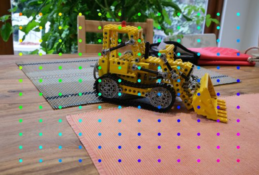

frame 1Photos in, geometry out
VGGT takes S images of a scene and predicts, for every frame, its camera, a depth map, a point map in the first camera's coordinates and the motion of query points. There is no optimisation loop: one forward pass of a 1.26 B-parameter transformer.
Scroll to zoom into each part. The numbers on the diagram are the phases of the code walkthrough.
Sanitising the images
load_and_preprocess_images resizes every photo to width 518 and rounds the height to a multiple of the 14 px patch size, centre-cropping anything taller than 518. RGBA images are composited on white.
Inside the model each channel is standardised with the ImageNet statistics DINOv2 was trained on, and the S frames are folded into the batch.
vggt/utils/load_fn.py · vggt/models/aggregator.py
Cutting the image into tokens
A 14×14 convolution with stride 14 is a shared linear map from each patch's 588 pixel values to a 1024-dimensional token. DINOv2 ViT-L adds learned position embeddings (bicubically resized to the 25×37 grid) and runs 24 transformer blocks.
vggt/layers/patch_embed.py · vggt/layers/vision_transformer.py
Marking the reference frame
Every frame gets one camera token and four register tokens in front of its patches. Frame 1 uses a separately learned pair; all others share the second pair. That is how the network knows which camera defines the world frame.
For the rotary position embedding, patches get their grid position (row + 1, column + 1) and special tokens get 0, which means no rotation.
vggt/models/aggregator.py · vggt/layers/rope.py
Looking within, then across frames
24 pairs of transformer blocks alternate two views of the same tokens. A frame block reshapes them to (B·S, P, C): each image attends only to itself. A global block reshapes to (B, S·P, C): every token sees every frame.
Layers 4, 11, 17 and 23 are kept, with frame and global outputs concatenated to 2048 channels for the heads. QK-norm and 2D RoPE sit inside every attention.
vggt/models/aggregator.py · vggt/layers/block.py, attention.py
Refining the cameras
Only each frame's camera token is used. Four times, the current estimate modulates the tokens (adaptive LayerNorm), a 4-block trunk mixes information across frames, and an MLP adds an update.
The 9 numbers decode to an OpenCV camera: rotation from the quaternion, focal length from the field of view, principal point at the image centre.
vggt/heads/camera_head.py · vggt/utils/pose_enc.py
From tokens back to pixels
The patch tokens of the four kept layers are reshaped into feature maps and resized to four scales, then fused coarse to fine and upsampled to full resolution.
The same head design predicts the depth map and the point map; the last channel is a confidence used to filter points.
vggt/heads/dpt_head.py · vggt/heads/head_act.py
Lifting depth into 3D
Each pixel is pushed along its camera ray to its predicted depth, then moved into the first camera's frame. Scroll to watch 140,000 kitchen points leave the image plane.
The paper reports these points are more accurate than the point head's; on our rendered test scenes the point head was slightly better.
vggt/utils/geometry.py
Following points through the frames
A third DPT head produces 128-channel tracking features at half resolution. Starting from the query points of frame 1, a tracker samples a 7-level correlation pyramid around each guess and lets a time/space transformer predict corrections, 4 times.
Right: the tracked grid on kitchen frames. In 3D, a consistent track collapses to a single point.
vggt/heads/track_head.py · vggt/heads/track_modules/